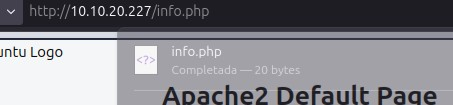

Practica 1: Instalación de un
servidor LEMP
Instalación del servidor de base de datos
Instalamos la base de datos.

Ejecutamos la configuración segura inicial.

Creamos una base de datos y un usuario nuevo.

Instalación de Nginx i PHP
Instalamos los paquetes necesarios.
Verificación del funcionamiento de nginx
Tenemos que modificar el archivo de configuración.

Accedemos desde el navegador, a la pagina web de inicio del servidor
Verificación del funcionamiento de PHP
Creamos un fichero dentro del directorio /var/www/html.
Comprobamos que los ficheros servidos por Apache son propiedad de www-data:www-data. Accedemos al navegador y vemos la configuración php instalado.

Acceso con nombre (resolución de nombres)
Editamos el archivo /etc/hosts y añadimos la dirección IP y el nombre.

Ahora visitamos otra vez la página web.